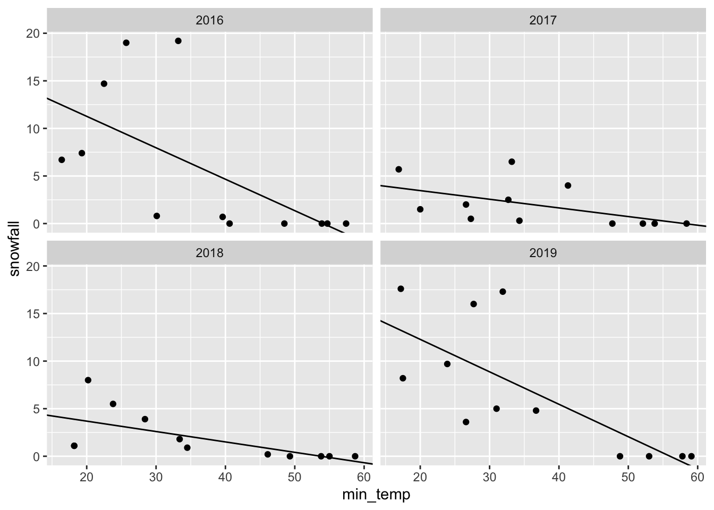

Chapter 6 Tidyverse
The tidyverse is actually a collection of R packages designed for data analysis and visualization. It is an essential tool for data scientists and statisticians who work with large datasets.
 |
At the end of this chapter you should be able to
|
Figure 6.1: The tidyverse.
The tidyverse packages are built around a common philosophy of data manipulation. The goal is to provide a consistent and intuitive syntax for data analysis that is easy to learn and use. The packages in the tidyverse include:
| 6.1.1 magrittr | provides the pipe, %>% used throughout the tidyverse. |
| 6.1.2 tibble | creates the main data object. |
| 6.2.1 readr | reading and writing data in various formats. |
| 6.3.1 dplyr | data manipulation. |
| 6.3.2 tidyr | transforming messy data into a tidy format. |
| 6.3.3 purrr | functional programming with vectors and lists. |
| 6.4.1 stringr | working with strings. |
| 6.4.2 lubridate | working with dates and date strings. |
| 6.5.2 ggplot2 | graphical plotting and data visualization. |
These packages work seamlessly together, allowing users to easily manipulate and visualize their data. The tidyverse also includes a set of conventions and best practices for data analysis, making it easy to follow a consistent workflow.
 |
Cheat-sheets ?? |
Consider the following workflow to read in data, calculate a linear regression and visualize the data using nine (9) of the underlying packages in the tidyverse. In this example, the goal is to read in climate data from Denver, Colorado and create a linear model relating the monthly amount of snowfall to the minimum temperature computed separately for each year in the data set. Additionally, plots of the data and the linear fit are produced to visualize the data.
library(tidyverse)
# readr, tibble: read in a table of comma separate values
url <- "https://raw.githubusercontent.com/jeffsocal/ASMS_R_Basics/main/data/denver_climate.csv"
download.file(url, destfile = "./data/denver_climate.csv")tbl_csv <- read_csv("data/denver_climate.csv")
# define a function to fit a linear regression model
lm_func <- function(data) {
lm(snowfall ~ min_temp, data = data)
}
# readr, tibble, magrittr: using the data imported from above
tbl_csv_lm <- tbl_csv %>%
# dplyr
group_by(year) %>%
# tidyr
nest() %>%
# dplyr, purrr: apply the function to each nested data frame
mutate(model = map(data, lm_func)) %>%
# dplyr, broom, purrr: extract the coefficients from each model
mutate(tidy = map(model, broom::tidy)) %>%
# tidyr
unnest(tidy) %>%
ungroup() %>%
# dplyr, stringr: clean-up the terms
mutate(term = term %>% str_replace_all("\\(|\\)", "")) %>%
# dplyr: retain only specific columns
select(year, term, estimate) %>%
# tidyr: convert from a long table to a wide table
pivot_wider(names_from = 'term', values_from = 'estimate') %>%
# dplyr: rename the min_temp variable to slope
rename(model_slope = min_temp)
#ggplot2
ggplot(tbl_csv, aes(min_temp, snowfall)) +
# represent the data as points
geom_point() +
# use the linear model data to plot regression lines
geom_abline(data = tbl_csv_lm,
aes(slope = model_slope, intercept = Intercept)) +
# plot each year separately
facet_wrap(~year)
To get started with the tidyverse, you can install the package using the following command:
Once installed, users can load the package and begin using the individual packages within the tidyverse:
Overall, the tidyverse is an essential tool for data analysis and visualization in R. Its user-friendly syntax and consistent conventions make it easy for data scientists and statisticians to work with large datasets.
6.1 Core Packages
Two important packages in the tidyverse are tibble and magrittr. These core packages enable other data manipulation operations to work seamlessly, improving efficiency and ease of use when working with data in R. In practice, these packages are typically used “behind-the-scenes”: you may not realize you’re using them, but they provide the basis for working with data in the tidyverse.
6.1.1 magrittr
The tidyverse package magrittr is a popular R package that provides a set of operators for chaining operations in a sequence, or pipeline. The package was developed by Stefan Milton Bache and Hadley Wickham. The main goal of magrittr is to make code more readable and easier to maintain by providing a chaining mechanism to link together individual data manipulation operations into data analysis pipelines. These pipelines are often much easier to construct and read compared to the same code written with base R.
The pipe operator, %>%, is the most famous operator provided by magrittr. It allows you to chain multiple operations without the need to use intermediate variables. The pipe operator takes an input, which could be the output of a previous function, and passes it as the first argument to the next function. This chaining of operations allows for more concise and readable code.
Here is an example of how to use the pipe operator with magrittr:
# create a vector of numbers
numbers <- c(1, 2, 3, 4, 5)
# Compute the square root of the sum of the numbers
# using base R
sqrt(sum(numbers))## [1] 3.872983# use the pipe operator to do the same thing
# by chaining together the operations
numbers %>% sum() %>% sqrt()## [1] 3.872983In this example, we create a vector of numbers and use the pipe operator to chain the sum() and sqrt() functions. The output of the sum() function is passed as the first argument to the sqrt() function. In this case, the base R version is actually quicker to type, but the order of operations are specified “inside-out” which is backwards from how we typically read. An advantage of pipe syntax is that the steps of the data processing proceed from left-to-right, just like how we read standard text. This become particularly helpful when performing more complex data analyses.
Magrittr also provides other useful operators, such as the assignment pipe %<>%, which allows you to update a variable in place, and the tee operator %T>%, which allows you to inspect the output of an operation without interrupting the chain.
|
The New Pipe Operator: The R language has recently added a “native” pipe operator, |>, that is part of base R. Newer R code
may use |> instead of %>% but both do essentially the same thing.
see this blog post for more information |
6.1.2 tibble
R tibble is a class of data frame in the R programming language. It is an improved alternative to the traditional data frame and is part of the tidyverse package. Tibbles are data frames with stricter requirements, and they provide a streamlined and more efficient way to work with data.
One of the main advantages of tibbles is that they provide a cleaner and more consistent way to display data. Tibbles only show the first 10 rows and all the columns that fit on the screen, making it easier to work with large datasets. Additionally, tibbles automatically convert character vectors to factors, preventing common errors that can occur when working with data frames.
Another important feature of tibbles is the way they handle column names. Tibbles will not allow spaces in column names, and they use backticks to reference columns with non-standard names. This makes it easier to work with datasets that have complex column names. Tibbles also provide a more consistent way to handle missing values. In data frames, missing values can be represented in different ways, such as NA, NaN, or NULL. Tibbles, on the other hand, only use NA to represent missing values, making it easier to work with missing data.
6.2 Importing
6.2.1 readr
R readr is a package in the R language that is used to read structured data files into R. The package is an efficient and user-friendly toolkit that allows for the reading of different types of flat files such as CSV, TSV, and fixed-width files. It is part of the tidyverse collection of packages, which is popular among data scientists and statisticians.
One of the key features of readr is its ability to quickly read data into R, making it an ideal package for data analysis and data cleaning. readr is designed to handle various types of data, including numeric, date, and character data. The package also has advanced features such as automatic guessing of column types, encoding detection, and parsing of dates and times.
# read in data from various formats
tbl_csv <- "data/some_data_set.csv" %>% read_csv()
tbl_tsv <- "data/some_data_set.tsv" %>% read_tsv()
# even read in compressed files
tbl_csv <- "data/some_data_set.csv.zip" %>% read_csv()
# read in data with some unconventional column separation by defining it literally
tbl_weird <- "data/some_data_set.txt" %>% read_delim(delim = "*")One of the best things about readr is its consistency in dealing with file formats, which allows for easy and fast data manipulation. The package provides a high level of control over the import process, allowing you to specify the location of the data file, the delimiter, and the encoding type. Additionally, readr can handle large datasets with ease, making it one of the most efficient packages for data handling.
6.3 Wrangling
Data wrangling is the process of cleaning, transforming, and formatting raw data into a usable format for analysis. The steps involved in data wrangling include removing duplicates, dealing with missing or erroneous values, converting data types, and formatting data into a consistent structure. It also involves merging data from different sources, reshaping data, and transforming data for analysis.
The objective of data wrangling is to create high-quality, structured data for further analysis and modeling. It requires technical skills, domain knowledge, and creativity. Without proper data wrangling, analysis and modeling may be compromised, leading to incorrect conclusions and decisions. This is where tidyverse functions become quite useful and we will go deeper into Data Wrangling in the subsiquent chapter.
Given an example of wide data, where Arabidopsis thaliana plants are measured for height for three weeks post germination.
library(tidyverse)
tbl_wide <- tibble(
plant = LETTERS[1:3],
condition = c('wet, cold', 'moist, cold', 'moist, hot'),
week_1 = c(0.3,0.2,0.4),
week_2 = c(1.3,1.5,1.7),
week_3 = c(3.4,4.1,5.2)
)
tbl_wide## # A tibble: 3 × 5
## plant condition week_1 week_2 week_3
## <chr> <chr> <dbl> <dbl> <dbl>
## 1 A wet, cold 0.3 1.3 3.4
## 2 B moist, cold 0.2 1.5 4.1
## 3 C moist, hot 0.4 1.7 5.26.3.1 dplyr
R dplyr is perhaps pne of the most powerful libraries in the tidyverse, providing a set of tools for data manipulation and transformation. It is designed to work seamlessly with data stored in data frames.
The library comes with a set of functions that can be used to filter, arrange, group, mutate, and summarize data. These functions are optimized for speed and memory efficiency, allowing users to work with large datasets easily.
Some of the most commonly used functions in dplyr are:
- filter: used to extract specific rows from a data frame based on certain conditions.
## # A tibble: 1 × 5
## plant condition week_1 week_2 week_3
## <chr> <chr> <dbl> <dbl> <dbl>
## 1 A wet, cold 0.3 1.3 3.4- arrange: used to sort the rows of a data frame based on one or more columns.
## # A tibble: 3 × 5
## plant condition week_1 week_2 week_3
## <chr> <chr> <dbl> <dbl> <dbl>
## 1 A wet, cold 0.3 1.3 3.4
## 2 B moist, cold 0.2 1.5 4.1
## 3 C moist, hot 0.4 1.7 5.2- select: used to select specific columns from a data frame.
## # A tibble: 3 × 2
## plant week_3
## <chr> <dbl>
## 1 A 3.4
## 2 B 4.1
## 3 C 5.2- mutate: used to add new columns to a data frame.
## # A tibble: 3 × 6
## plant condition week_1 week_2 week_3 week_4
## <chr> <chr> <dbl> <dbl> <dbl> <dbl>
## 1 A wet, cold 0.3 1.3 3.4 3.8
## 2 B moist, cold 0.2 1.5 4.1 4.6
## 3 C moist, hot 0.4 1.7 5.2 5.76.3.2 tidyr
R tidyr is a package in R that helps to reshape data frames. It is an essential tool for data cleaning and analysis. Tidyr is used to convert data from wide to long format and vice versa, and it also helps to separate and unite columns.
- pivot_longer: used to reshape data from a column-based wide format to a row-based long format.
tbl_long <- tbl_wide %>% pivot_longer(cols = matches('week'), names_to = 'time', values_to = 'inches')
tbl_long## # A tibble: 9 × 4
## plant condition time inches
## <chr> <chr> <chr> <dbl>
## 1 A wet, cold week_1 0.3
## 2 A wet, cold week_2 1.3
## 3 A wet, cold week_3 3.4
## 4 B moist, cold week_1 0.2
## 5 B moist, cold week_2 1.5
## 6 B moist, cold week_3 4.1
## 7 C moist, hot week_1 0.4
## 8 C moist, hot week_2 1.7
## 9 C moist, hot week_3 5.2- pivot_wider: used to reshape data from a row-based long format to a column-based wide format.
## # A tibble: 3 × 5
## plant condition week_1 week_2 week_3
## <chr> <chr> <dbl> <dbl> <dbl>
## 1 A wet, cold 0.3 1.3 3.4
## 2 B moist, cold 0.2 1.5 4.1
## 3 C moist, hot 0.4 1.7 5.2The package tidyr also has functions to separate and unite columns. The “separate” function is used when you have a column that contains multiple variables. For example, if you have a column that contains both the first and last name of a person, you can separate them into two columns. The “unite” function is the opposite of separate. It is used when you want to combine two or more columns into one column.
- separate: used to separate a column with multiple values into two or more columns.
## # A tibble: 9 × 5
## plant soil temp time inches
## <chr> <chr> <chr> <chr> <dbl>
## 1 A wet cold week_1 0.3
## 2 A wet cold week_2 1.3
## 3 A wet cold week_3 3.4
## 4 B moist cold week_1 0.2
## 5 B moist cold week_2 1.5
## 6 B moist cold week_3 4.1
## 7 C moist hot week_1 0.4
## 8 C moist hot week_2 1.7
## 9 C moist hot week_3 5.2- separate_rows: used to duplicate a row with multiple values from a given column.
## # A tibble: 6 × 5
## plant condition week_1 week_2 week_3
## <chr> <chr> <dbl> <dbl> <dbl>
## 1 A wet 0.3 1.3 3.4
## 2 A cold 0.3 1.3 3.4
## 3 B moist 0.2 1.5 4.1
## 4 B cold 0.2 1.5 4.1
## 5 C moist 0.4 1.7 5.2
## 6 C hot 0.4 1.7 5.26.3.3 purrr
The purrr package is a functional programming toolkit for R that enables users to easily and rapidly apply a function to a set of inputs, returning a list or vector of outputs. It is designed to work seamlessly with the tidyverse ecosystem of packages, but can also be used with base R functions.
The most important feature in purrr is its ability to replace loops with functions that save time and effort. The package has a collection of functions that allow you to work with functions that take one or more arguments. Some of these functions include map, map2, pmap, and imap.
The map function is purrr’s flagship function and is used to apply a function to each element of a list or vector, returning a list of outputs. The map2 function applies a function to two lists or vectors in parallel, returning a list of outputs. The pmap function applies a function to an arbitrary number of lists or vectors in parallel, returning a list of outputs. The imap function is similar to map, but also provides the index of the current element in the input vector.
Purrr also includes features such as the possibility of mapping over nested lists, using map and variants to iterate over grouped data, and using map and variants to modify data in place.
numbers <- list(1, 2, 3, 4, 5)
# define a function to square a number
square <- function(x) { x ^ 2 }
# use map to apply the function to each element of the list
squared_numbers <- map(numbers, square)
# print the result
squared_numbers## [[1]]
## [1] 1
##
## [[2]]
## [1] 4
##
## [[3]]
## [1] 9
##
## [[4]]
## [1] 16
##
## [[5]]
## [1] 256.3.4 glue
R glue is a tidyverse package that provides a simple way to interpolate values into strings. It allows users to combine multiple strings or variables together into a single string with minimum efforts, simpler than using base R fuctions.
The glue function can handle various types of inputs, including vectors, lists, and expressions. It also supports user-defined formats and allows users to specify separators between the values.
One of the significant advantages of using glue is that it provides a more readable and concise way to create strings in R. It eliminates the need for multiple paste() or paste0() statements, which can be cumbersome and error-prone.
For example, instead of writing:
we can use R glue:
This code will produce the same output, but it’s more readable and easier to modify.
6.4 Data Types
6.4.1 stringr
The tidyverse package stringr provides a cohesive set of functions designed to make working with strings more efficient. It is especially useful when dealing with messy or unstructured data that needs to be cleaned and transformed into a more structured format.
Several functions in stringr provides methods working with strings, for example:
- str_replace: replaces a pattern with another pattern in a string.
## [1] "Hello Everyone"- str_extract: extracts the first occurrence of a pattern from a string.
## [1] "World"- str_split: splits a string into pieces based on a specified pattern.
## [[1]]
## [1] "Hello" "World"6.4.2 lubridate
The tidyverse package lubridate helps with the handling of dates and times. The package has several functions that make it easier to work with dates and times, especially when dealing with data that has different formats.
Some of the functions in lubridate package include:
- ymd - this is used to convert dates in the format of year, month, and day to the date format in R. For example,
ymd("20220101")will return the date in R format. - dmy - this is used to convert dates in the format of day, month, and year to the date format in R. For example,
dmy("01-01-2022")will return the date in R format. - hms - this is used to convert time in the format of hours, minutes, and seconds to the time format in R. For example,
hms("12:30:15")will return the time in R format. - ymd_hms - this is used to convert dates and times in the format of year, month, day, hours, minutes, and seconds to the date and time format in R. For example,
ymd_hms("2022-01-01 12:30:15")will return the date and time in R format.
There are also functions for extracting information from dates and times such as year(), month(), day(), hour(), minute(), and second().
6.4.3 forcats
R forcats is a tidyverse package that provides a set of tools for working with categorical data. It is designed to make it easier to work with factors in R, which are used to represent categorical data.
The forcats package provides several functions that can be used to manipulate factors, including reordering levels, combining levels, and handling missing values. It also provides functions for working with ordered factors, which are used to represent data that has a natural ordering, such as age groups or ratings.
One of the key benefits of using forcats is that it allows you to easily visualize and analyze categorical data. The package provides functions for creating categorical plots, such as bar charts and pie charts, as well as for calculating summary statistics for categorical data.
In addition to its core functionality, forcats is also highly customizable. It provides a wide range of options for controlling the appearance of plots and for customizing the behavior of factor manipulation functions.
6.5 Summarizing
6.5.1 dplyr
In the R tidyverse package, summarizing data is a common task performed on data frames. The dplyr package provides a set of functions that makes it easy to summarize data based on one or more variables.
- group_by: used to group rows of a data frame by one or more columns.
- summarize: used to summarize the data based on one or more aggregate functions.
The summarise() function is used to perform simple summary statistics on data frames. It takes the name of the new variable as well as the summary function that should be used to calculate its value. For example, to calculate the mean and standard deviation of a variable named ‘x’ in a data frame named ‘df’, we can use the following code:
## # A tibble: 1 × 2
## min max
## <dbl> <dbl>
## 1 0.2 5.2The group_by() function is used to group data frames by one or more variables. This is useful when we want to summarize data by different categories. For example, to calculate the mean and standard deviation of ‘x’ by ‘group’, we can use the following code:
## # A tibble: 3 × 3
## plant min max
## <chr> <dbl> <dbl>
## 1 A 0.3 3.4
## 2 B 0.2 4.1
## 3 C 0.4 5.2The summarize_at() and summarize_all() functions are used to perform summary statistics on multiple variables at once. The summarize_at() function takes a list of variables to summarize, while the summarize_all() function summarizes all variables in the data frame. For example, to calculate the mean and standard deviation of all numeric variables in a data frame named ‘df’, we can use the following code:
## # A tibble: 1 × 8
## plant_max condition_max time_max inches_max plant_min condition_min time_min inches_min
## <chr> <chr> <chr> <dbl> <chr> <chr> <chr> <dbl>
## 1 C wet, cold week_3 5.2 A moist, cold week_1 0.2Summarizing data is an essential task that can be performed using several functions. These functions make it easy to calculate summary statistics based on one or more variables, group data frames by different categories, and summarize multiple variables at once.
6.5.2 ggplot2
The tidyverse package ggplot2, demonstrated at the onset of this chapter, is a data visualization package in R programming language that provides a flexible and powerful framework for creating graphs and charts. It is built on the grammar of graphics, which is a systematic way of mapping data to visual elements like points, lines, and bars.
With ggplot2, you can create a wide range of graphs including scatterplots, bar charts, line charts, and more. The package offers a variety of customization options, such as color schemes, themes, and annotations, allowing you to create professional-looking visualizations with ease.
One of the key benefits of ggplot2 is that it allows you to quickly explore and analyze your data visually. You can easily create multiple graphs with different variables and subsets of your data, and compare them side by side to identify patterns and trends.
6.6 Dplyr in more Detail
Figure 6.2: dplyr hex logo.
The dplyr package is the backbone of the tidyverse and defines the fundamental data operations that are needed to perform data analysis tasks. Specifically, dplyr formalizes these fundamental operations into a set of “verbs” or actions that are used to manipulate/transform/summarize data. These verbs are embodied as functions you can use to perform complex data analysis tasks. Fortunately, there is a relatively small set of functions that you need to learn and remember, and their names clearly reflect what they are used for. Ultimately, these dplyr functions help you focus on the question you’re trying to answer rather than the mechanism of how to answer the question.
There are six fundamental verbs (functions) provided by the dplyr package:
mutate: adds a new (or updates an existing) column to the input data, often based upon exisiting columns in the input dataselect: picks specific columns from the input data (i.e. filters to specific columns)filter: subsets the input data to specific rows, usually based upon a filtering conditionarrange: reorders the input data based upon the data in specified columnsgroup_by: creates subset groups of the input data using columns with group information in the input datasummarize: compute summaries across multiple rows in your data; often used withgroup_by
Figure 6.3: Overview of dplyr verbs.
Importantly, the first input to a dplyr function is always a data table (e.g. a tibble) and the ouput is always a new data table that has been transformed by the function. For example:
# add a new column to my_df
mutate(my_df, ...)
# subset my_df to specific columns
select(my_df, ...)
# dplyr functions always return a transformed data table
# you typically want to save the results to a new variable
# or update the existing version of the table
my_df2 <- mutate(my_df, ...)6.6.1 mutate
The mutate function is used when you want to add a new column or update an existing column in your data table. Typically, the new or updated column is based upon existing data already present in your data table and you use it as the basis for the new column you want to create/update. Some examples include:
- computing the log transformed version of existing data
- adding together the values from multiple columns
- subtracting off a baseline value from existing measurements
The following code provides a common example of how mutate can be used:
# Read the data set
url <- "https://raw.githubusercontent.com/jeffsocal/ASMS_R_Basics/main/data/bacterial-metabolites_dose-simicillin_tidy.csv"
download.file(url, destfile = "./data/bacterial-metabolites_dose-simicillin_tidy.csv")# read in and examine the data
dat <- read_csv("data/bacterial-metabolites_dose-simicillin_tidy.csv")## Rows: 180 Columns: 5
## ── Column specification ─────────────────────────────────────────────────────────────────────
## Delimiter: ","
## chr (2): Organism, Metabolite
## dbl (3): Dose_mg, Time_min, Abundance
##
## ℹ Use `spec()` to retrieve the full column specification for this data.
## ℹ Specify the column types or set `show_col_types = FALSE` to quiet this message.## # A tibble: 180 × 5
## Organism Dose_mg Metabolite Time_min Abundance
## <chr> <dbl> <chr> <dbl> <dbl>
## 1 e coli 0 glutamate 0 191666
## 2 e coli 0 glutamate 10 2082823
## 3 e coli 0 glutamate 20 1796910
## 4 e coli 0 glutamate 50 846402
## 5 e coli 0 glutamate 120 1782879
## 6 staph aureus 0 glutamate 0 125210
## 7 staph aureus 0 glutamate 10 132156
## 8 staph aureus 0 glutamate 20 114445
## 9 staph aureus 0 glutamate 50 117150
## 10 staph aureus 0 glutamate 120 137747
## # ℹ 170 more rows# Add a new column that is the log10 value of the Abundance column
dat <- mutate(dat, log10_Abundance = log10(Abundance))
dat## # A tibble: 180 × 6
## Organism Dose_mg Metabolite Time_min Abundance log10_Abundance
## <chr> <dbl> <chr> <dbl> <dbl> <dbl>
## 1 e coli 0 glutamate 0 191666 5.28
## 2 e coli 0 glutamate 10 2082823 6.32
## 3 e coli 0 glutamate 20 1796910 6.25
## 4 e coli 0 glutamate 50 846402 5.93
## 5 e coli 0 glutamate 120 1782879 6.25
## 6 staph aureus 0 glutamate 0 125210 5.10
## 7 staph aureus 0 glutamate 10 132156 5.12
## 8 staph aureus 0 glutamate 20 114445 5.06
## 9 staph aureus 0 glutamate 50 117150 5.07
## 10 staph aureus 0 glutamate 120 137747 5.14
## # ℹ 170 more rowsIn this example, dat is data table and used as input to the mutate function. Inside the mutate function, the new column to create is given a name, log10_Abundance, followed by an = and the expression that will be used to compute the data in the new column. Importantly, this expression uses existing data in our input data table specified by its column name, Abundance. Note that there are no quotation marks around Abundance; when using dplyr functions, you don’t put quotes around the name of columns in the input data.
6.6.2 select
The select function is used when you want to focus on specific columns in your data table. Sometimes, a data table may contain many columns of data, but you may only need a small subset of them for a given analysis task. In this case, using select removes the unnecessary columns from the data table and allows you to more easily focus on what you need.
# Focus on just the Organism, Time_min and Abundance columns
dat_slct <- select(dat, Organism, Time_min, Abundance)
dat_slct## # A tibble: 180 × 3
## Organism Time_min Abundance
## <chr> <dbl> <dbl>
## 1 e coli 0 191666
## 2 e coli 10 2082823
## 3 e coli 20 1796910
## 4 e coli 50 846402
## 5 e coli 120 1782879
## 6 staph aureus 0 125210
## 7 staph aureus 10 132156
## 8 staph aureus 20 114445
## 9 staph aureus 50 117150
## 10 staph aureus 120 137747
## # ℹ 170 more rowsHere, the select function just takes the names of the columns you want to subset to as input. Like in the mutate example above, you do not put quotes around the names of the columns.
6.6.3 filter
The filter function is used when you need to get or remove specific rows from your data table, almost always as specified by a conditional expression. The filter function uses the supplied condition expression, evaluates the condition on each row in your data table, and only gives back rows for which the condition is true. Keeping versus removing rows depends on how the conditional expression is constructed. For example, if you want to keep rows based on a given condition, you might use the == operator, while if you want to remove rows, you might use the != operator. Some examples where filter is used include:
- removing negative or missing values (
NA) from your data table - getting only the “disease” samples from your data table
- subsetting the data to m/z values greater than 1000
## # A tibble: 60 × 6
## Organism Dose_mg Metabolite Time_min Abundance log10_Abundance
## <chr> <dbl> <chr> <dbl> <dbl> <dbl>
## 1 e coli 0 glutamate 0 191666 5.28
## 2 e coli 0 glutamate 10 2082823 6.32
## 3 e coli 0 glutamate 20 1796910 6.25
## 4 e coli 0 glutamate 50 846402 5.93
## 5 e coli 0 glutamate 120 1782879 6.25
## 6 e coli 10 glutamate 0 1445 3.16
## 7 e coli 10 glutamate 10 1017467 6.01
## 8 e coli 10 glutamate 20 14456533 7.16
## 9 e coli 10 glutamate 50 813321 5.91
## 10 e coli 10 glutamate 120 29825 4.47
## # ℹ 50 more rows# Remove any data where the Abundance is less than 10
dat_flt <- filter(dat, Abundance >= 10)
dat_flt## # A tibble: 176 × 6
## Organism Dose_mg Metabolite Time_min Abundance log10_Abundance
## <chr> <dbl> <chr> <dbl> <dbl> <dbl>
## 1 e coli 0 glutamate 0 191666 5.28
## 2 e coli 0 glutamate 10 2082823 6.32
## 3 e coli 0 glutamate 20 1796910 6.25
## 4 e coli 0 glutamate 50 846402 5.93
## 5 e coli 0 glutamate 120 1782879 6.25
## 6 staph aureus 0 glutamate 0 125210 5.10
## 7 staph aureus 0 glutamate 10 132156 5.12
## 8 staph aureus 0 glutamate 20 114445 5.06
## 9 staph aureus 0 glutamate 50 117150 5.07
## 10 staph aureus 0 glutamate 120 137747 5.14
## # ℹ 166 more rowsIn the first example, we use the conditional expression Organism == "e coli" as the filtering criteria. Here, Organism in the name of a column in our input data (note: no quotes around the column name) and the conditional expression asks the question “is Organism equal to ‘e coli’?” for every row in the data table. If the answer is yes, that row is kept in the output; otherwise it is removed. The second example is similar but uses the >= operator to ask questions about the Abundance values, only keeping those rows where the Abundance is greater than or equal to 10.
6.6.4 arrange
The arrange function is used to reorder the rows in your data table, most often, by sorting based upon one or more of the columns. Some examples include:
- sorting your table from low to high values
- sorting your table first by a group column, then by values within each group
## # A tibble: 180 × 6
## Organism Dose_mg Metabolite Time_min Abundance log10_Abundance
## <chr> <dbl> <chr> <dbl> <dbl> <dbl>
## 1 staph aureus 20 succinic acid 120 1 0
## 2 staph aureus 20 phosphatidylcholine 120 1 0
## 3 p aeruginosa 20 succinic acid 120 6 0.778
## 4 e coli 20 phosphatidylcholine 120 9 0.954
## 5 p aeruginosa 20 phosphatidylcholine 120 10 1
## 6 p aeruginosa 0 lysine 0 15 1.18
## 7 e coli 20 succinic acid 120 16 1.20
## 8 p aeruginosa 10 glutamate 0 23 1.36
## 9 p aeruginosa 20 succinic acid 50 80 1.90
## 10 staph aureus 0 lysine 20 109 2.04
## # ℹ 170 more rows# sort the table by Abundance (high to low)
# desc is a function that says to use descending order
dat <- arrange(dat, desc(Abundance))
dat## # A tibble: 180 × 6
## Organism Dose_mg Metabolite Time_min Abundance log10_Abundance
## <chr> <dbl> <chr> <dbl> <dbl> <dbl>
## 1 p aeruginosa 10 phosphatidylcholine 0 326068174 8.51
## 2 e coli 0 phosphatidylcholine 10 196542536 8.29
## 3 e coli 20 phosphatidylcholine 0 183210138 8.26
## 4 e coli 0 phosphatidylcholine 120 175507910 8.24
## 5 p aeruginosa 0 phosphatidylcholine 50 173720561 8.24
## 6 p aeruginosa 0 phosphatidylcholine 20 156286340 8.19
## 7 p aeruginosa 0 phosphatidylcholine 10 144491775 8.16
## 8 e coli 10 phosphatidylcholine 0 128103670 8.11
## 9 e coli 0 phosphatidylcholine 20 121918323 8.09
## 10 p aeruginosa 0 phosphatidylcholine 120 120335903 8.08
## # ℹ 170 more rows# sort the table by Organism, then by Abundance (high to low)
dat <- arrange(dat, Organism, desc(Abundance))
dat## # A tibble: 180 × 6
## Organism Dose_mg Metabolite Time_min Abundance log10_Abundance
## <chr> <dbl> <chr> <dbl> <dbl> <dbl>
## 1 e coli 0 phosphatidylcholine 10 196542536 8.29
## 2 e coli 20 phosphatidylcholine 0 183210138 8.26
## 3 e coli 0 phosphatidylcholine 120 175507910 8.24
## 4 e coli 10 phosphatidylcholine 0 128103670 8.11
## 5 e coli 0 phosphatidylcholine 20 121918323 8.09
## 6 e coli 0 phosphatidylcholine 50 110535732 8.04
## 7 e coli 0 phosphatidylcholine 0 84588958 7.93
## 8 e coli 20 lysine 50 21482392 7.33
## 9 e coli 10 succinic acid 20 20374016 7.31
## 10 e coli 10 glutamate 20 14456533 7.16
## # ℹ 170 more rowsIn these examples, column names in the input data table are used to sort the table. When you need to perform sorting within multiple groups, you just supply the column names in the order you want to perform the sorting. By default, sorting is performed from “low to high”: for numbers, numerical sorting is used, and for characters, alphabetical sorting is used. The desc function can be used to reverse the sorting from “high to low”.
6.6.5 group_by + summarize
While group_by can be used with the other dplyr functions, it is most commonly used in combination with summarize in order to compute summarizations or aggregations of data within subgroups of your data. By itself, group_by doesn’t outwardly do anything to your data table. Rather, it tells R to get ready to work on subsets of your data individually for each subgroup. As such, group_by is always used in combination with another dplyr function. You can think of the group_by function as slicing apart your input data table into individual smaller tables based on a supplied grouping column so that you can perform further data manipulations on each of these sub-tables individually. Some examples of when you might use group_by + summarize include:
- computing the average abundance for each analyte in your experiment
- finding the max retention time for each peptide across runs
- computing intensity CVs for each analyte (measured with replicates)
## # A tibble: 180 × 6
## # Groups: Organism [3]
## Organism Dose_mg Metabolite Time_min Abundance log10_Abundance
## <chr> <dbl> <chr> <dbl> <dbl> <dbl>
## 1 e coli 0 phosphatidylcholine 10 196542536 8.29
## 2 e coli 20 phosphatidylcholine 0 183210138 8.26
## 3 e coli 0 phosphatidylcholine 120 175507910 8.24
## 4 e coli 10 phosphatidylcholine 0 128103670 8.11
## 5 e coli 0 phosphatidylcholine 20 121918323 8.09
## 6 e coli 0 phosphatidylcholine 50 110535732 8.04
## 7 e coli 0 phosphatidylcholine 0 84588958 7.93
## 8 e coli 20 lysine 50 21482392 7.33
## 9 e coli 10 succinic acid 20 20374016 7.31
## 10 e coli 10 glutamate 20 14456533 7.16
## # ℹ 170 more rows# compute the median abundance for each organism
dat_smry <- summarize(dat_grp, median_Abundance = median(Abundance))
dat_smry## # A tibble: 3 × 2
## Organism median_Abundance
## <chr> <dbl>
## 1 e coli 190909
## 2 p aeruginosa 242584.
## 3 staph aureus 57954In this first example, the data table was first grouped by Organism, then summarize was used on this grouped data table to compute the median Abundance value for each group. The expression, median_Abundance = median(Abundance) is very similar to the type of expression used in the mutate example above. Here, we first supply the name of the new column, median_Abundance, that will be created to hold the summarized median Abundance values computed for each Organism. Then we specify the expression to be performed on each Organism group, in this case, using the median function. Because the input table has data for 3 different organisms, the resulting table returned from summarize has 3 rows, one row for each organsim. Furthermore, the output table contains the new column with the summarized abundance values.
It is also possible to group by more than one column, as shown below:
# You can also group by multiple columns
dat_grp <- group_by(dat, Organism, Dose_mg)
dat_smry <- summarize(dat_grp, median_Abundance = median(Abundance))## `summarise()` has grouped output by 'Organism'. You can override using the `.groups`
## argument.## # A tibble: 9 × 3
## # Groups: Organism [3]
## Organism Dose_mg median_Abundance
## <chr> <dbl> <dbl>
## 1 e coli 0 1541934.
## 2 e coli 10 201385
## 3 e coli 20 90985
## 4 p aeruginosa 0 886166
## 5 p aeruginosa 10 214703
## 6 p aeruginosa 20 84444.
## 7 staph aureus 0 120692.
## 8 staph aureus 10 13202.
## 9 staph aureus 20 11184Here, you simply supply additional grouping column names in the group_by function. In this case, we use both Organism and Dose_mg to create the subgroups. Interestingly, the summarize code is exactly the same as before, but since the input grouped data has been group by two columns, the summarized output is different and based upon this new grouping. Now, the results show the median Abundance values for each Organism and Dose_mg pair. Since there are 3 organisms and 3 dose levels in the input data, the output summarized data has 3 x 3 = 9 rows.
6.7 Dplyr Data Pipelines
Building on the dplyr fundamentals covered above, the next step is learn how to these data manipulation verbs can be effectively used to create data analysis pipelines. First, we need to revisit the pipe operator from above, %>%. Recall that the pipe operator takes an input (on the left side) and passes it as the first argument to a function (on the right side. In practice, the pipe operator just allows us to write R code in a slightly different way, but this new way is really useful for making data analysis pipelines.
The following figure shows specifically what the pipe operator does:
Figure 6.4: Base R syntax vs. pipeline syntax.
Both of these lines of code do exactly the same thing, but are written slightly differently. The pipe syntax allows you to pull out the first argument of a function, move it to the front before the %>%, and then specify the function with the rest of needed arguments.
Next, we can combine this syntax with one of the fundamental properties of the dplyr functions from above: the first input to all dplyr verb functions is a data table, and the ouput is another data table as transformed by the verb function.
Figure 6.5: dplyr verb function used with the pipe operator.
This pattern can be though of as a data manipulation template. Relating this back to the specific dplyr functions from above, this template can be applied as follows:
Figure 6.6: Pipeline template applied with different dplyr verbs.
Because we know both the input and output for a dplyr verb is a data frame, the pipeline operator allows us to chain together multiple data manipulations into a data analysis pipeline:
Figure 6.7: dplyr verbs chained together in a dplyr pipeline.
Let’s now make this more concrete with specific examples. Using the metabolite data used in the examples above, imagine you need to compute the mean log10 abundance for metabolite and dose, separately for each organism. Furthermore, you’ve found that the data at the last timepoint (120 min) are not reliable and should be removed from the calculations. Also, since you are most interested in the results with the highest mean abundance values, it would be useful to sort the output in descending mean abundance order.
Fortunatley, it is fairly straightforward to translate this task to a dplyr pipeline. As a beginner, a great place to start is to translate the problem into step-by-step pieces that you intend to perform:
- Read the data into R
- Filter out data from the 120 min time point
- Compute the log10 abundance values
- Group the data by organism, does, and metabolite
- Summarize the data by computing the3 mean log10 abundance values for each group
- Arrange the resulting data by mean abundance in descending order
With this workflow in mind, each step can be translated into a dplyr pipeline:
# Make the analysis pipeline
dat_smry <- dat %>%
# 2. Filter out data from the 120 min time point
filter(Time_min != 120) %>%
# 3. Compute the log10 abundance values
mutate(log10_Abundance = log10(Abundance)) %>%
# 4. Group the data by organism, dose, and metabolite
group_by(Organism, Dose_mg, Metabolite) %>%
# 5. Summarize the data by computing the3 mean log10 abundance values for each group
summarize(mean_log10_Abundance = mean(log10_Abundance)) %>%
# 6. Arrange the resulting data by mean abundance in descending order
arrange(desc(mean_log10_Abundance)) %>%
# optional but advised step to ungroup the data
ungroup()## `summarise()` has grouped output by 'Organism', 'Dose_mg'. You can override using the
## `.groups` argument.## # A tibble: 36 × 4
## Organism Dose_mg Metabolite mean_log10_Abundance
## <chr> <dbl> <chr> <dbl>
## 1 p aeruginosa 0 phosphatidylcholine 8.14
## 2 e coli 0 phosphatidylcholine 8.09
## 3 staph aureus 0 phosphatidylcholine 7.11
## 4 e coli 10 phosphatidylcholine 6.43
## 5 p aeruginosa 10 phosphatidylcholine 6.42
## 6 p aeruginosa 0 succinic acid 6.24
## 7 p aeruginosa 10 succinic acid 6.21
## 8 e coli 0 succinic acid 6.10
## 9 e coli 10 succinic acid 5.98
## 10 e coli 0 glutamate 5.95
## # ℹ 26 more rowsExercises
 |
|
- Download the
bacterial-metabolites_dose-simicillin_tidy.csvdata set.
url <- "https://raw.githubusercontent.com/jeffsocal/ASMS_R_Basics/main/data/bacterial-metabolites_dose-simicillin_tidy.csv"
download.file(url, destfile = "./data/bacterial-metabolites_dose-simicillin_tidy.csv")- Read in the
bacterial-metabolites_dose-simicillin_tidy.csvdata set.
## Rows: 180 Columns: 5
## ── Column specification ─────────────────────────────────────────────────────────────────────
## Delimiter: ","
## chr (2): Organism, Metabolite
## dbl (3): Dose_mg, Time_min, Abundance
##
## ℹ Use `spec()` to retrieve the full column specification for this data.
## ℹ Specify the column types or set `show_col_types = FALSE` to quiet this message.- How many organisms, metabolites, dose levels, and time points are in the data? How many rows are in the data table? What is the overall study design?
## [1] 180## [1] TRUE- Which metabolite has the highest overall mean abundance?
## # A tibble: 4 × 2
## Metabolite mean_abundance
## <chr> <dbl>
## 1 phosphatidylcholine 50221415.
## 2 succinic acid 1855206.
## 3 glutamate 1817320.
## 4 lysine 1349963.- Does this metabolite have the highest mean abundance for each organism, or is there differences between organisms?
## `summarise()` has grouped output by 'Organism'. You can override using the `.groups`
## argument.## # A tibble: 12 × 3
## # Groups: Organism [3]
## Organism Metabolite mean_abundance
## <chr> <chr> <dbl>
## 1 e coli phosphatidylcholine 67749754.
## 2 e coli glutamate 2323045.
## 3 e coli succinic acid 1906850.
## 4 e coli lysine 1519827.
## 5 p aeruginosa phosphatidylcholine 77078132.
## 6 p aeruginosa succinic acid 3525432.
## 7 p aeruginosa glutamate 2902178
## 8 p aeruginosa lysine 2336119.
## 9 staph aureus phosphatidylcholine 5836359.
## 10 staph aureus glutamate 226736.
## 11 staph aureus lysine 193944.
## 12 staph aureus succinic acid 133337.- Is there an overall trend of mean abundance values vs. time point? What about abundance vs. dose?
## # A tibble: 5 × 2
## Time_min mean_abundance
## <dbl> <dbl>
## 1 0 26639946.
## 2 10 11726915.
## 3 20 11929517.
## 4 50 9389061.
## 5 120 9369441.## # A tibble: 3 × 2
## Dose_mg mean_abundance
## <dbl> <dbl>
## 1 0 24454975.
## 2 10 9900030.
## 3 20 7077924.- Using the example code at the beginning of this Chapter (using the Dever climate data), compute a linear fit of log10 abundance vs. time point for each metabolite and plot the results.